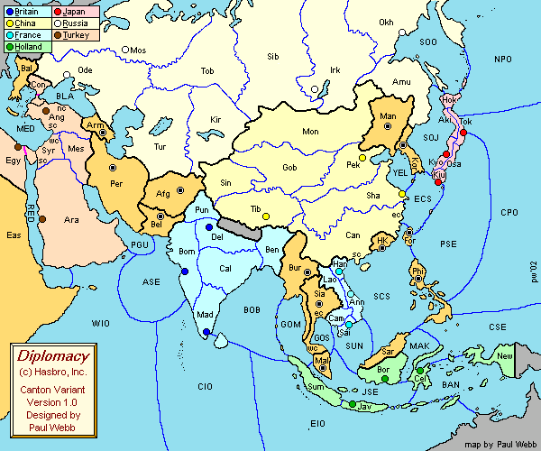
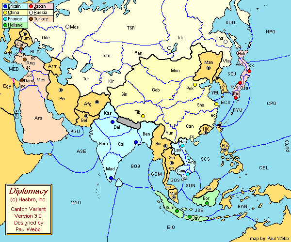
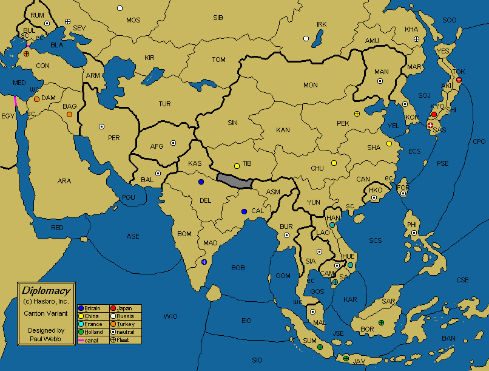
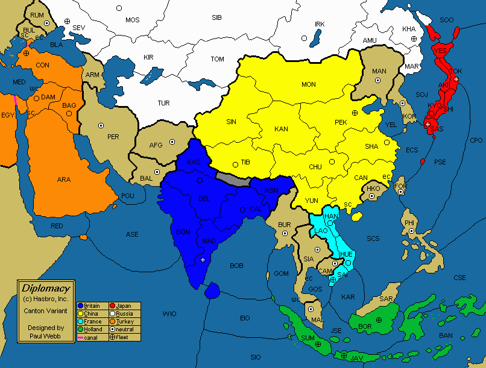
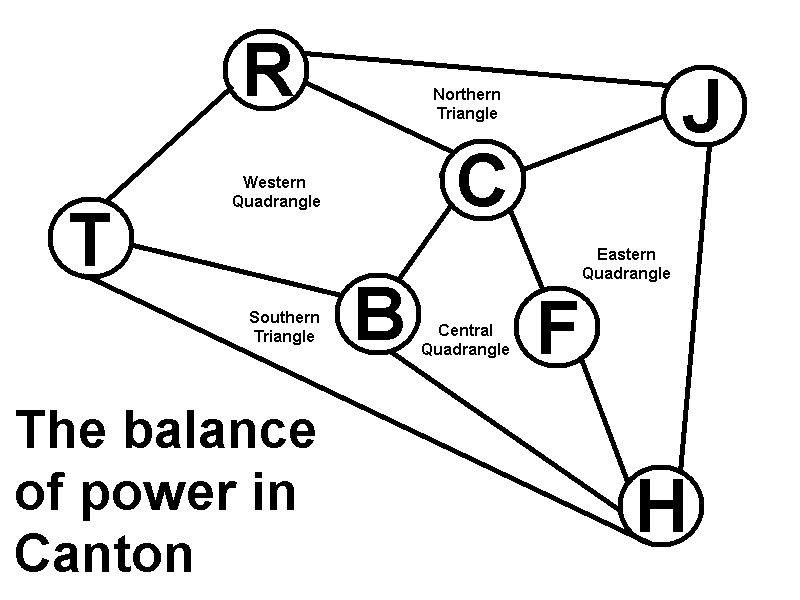

In the spirit of Charles Roburn's superb review of the Milan variant, I would like to provide a similar account about Canton, a variant by Paul Webb that seeks to adress some of the shortcomings seen in Avalon Hill's Colonial Diplomacy. Shamelessly following in Roburn's footsteps, let's start with a general Introduction to the variant, and then going over its major aspects.
INTRODUCTION
Canton started with a simple premise: to merge the fascinating setting of Asia during the colonial era with the elegant simplicity shown in Allan Calhamer's Classic. Given Colonial Diplomacy's major weaknesses (complex extra rules, unnecessarily high province density, extreme lack of balance, etc), Paul Webb attempted to merge large, useless spaces and provide a more intimate feeling to Asia while still using the original seven powers of Colonial: Britain, Turkey, China, Russia, Japan, France and Holland.

Webb's first result in changing and simplifying Colonial was a solid map. The very first edition had 34 supply centers in total (with a 18 SCs criteria for victory, like Classic) and different surroundings around the map's edges and Central Asia. Notably, both East Africa and New Guinea were passable, while some major national centers (e.g. Constantinople, Sumatra, Calcutta) weren't home centers for their respective powers.

He would eventually make some major changes, adding more impassable territories and swapping a few home centers (e.g. Bombay's SC going to Calcutta). The neutral center in Armenia went over to a new space, Rumania, simulating Russo-Turkish rivalry over the Eastern Balkans. France and Japan saw little change, while many sea spaces got redrawn all over the map.

Finally, Webb's ultimate map came to life with 36 supply centers, with a 19 SC victory criteria marrying well with its 1901 setting. Of note is the addition of a fourth Chinese home center, and a neutral center in Cambodia for French capture. The final map has 81 provinces in total (versus 75 in Classic), with 18 landlocked spaces, 41 coastal spaces and 22 sea spaces. Knowledge of Classic's familiar dynamics along the Main Stalemate Line serve for little here; the geopolitical disposition of countries makes for a very different setting, one with interesting possibilities for the expert diplomat to cope with.
Map and Rules

The starting unit setup, of enourmous relevance, is as follows:
- Britain: Army Calcutta, Army Delhi, Fleet Madras
- China: Army Peking, Army Chungking, Army Tibet, Fleet Shanghai
- France: Army Hanoi, Army Hue, Fleet Saigon
- Holland: Fleet Sumatra, Fleet Java, Fleet Borneo
- Japan: Army Kyoto, Fleet Sasebo, Fleet Tokyo
- Russia: Army Moscow, Army Irkutsk, Fleet Sevastopol, Fleet Khabarovsk
- Turkey: Army Damascus, Army Baghdad, Fleet Constantinople
Out of 36 supply centers, 23 start under control of the Great Powers, with 13 being up for grabs as neutral centers. Some historical inaccuracies are clear in the map, mostly concerning historical spheres of influence that either didn't exist (like Turkish control over Arabia, historically feeble) or were removed (like British power over Hong Kong). Yet, like with Classic's neutral Tunis, these small deviations are sparse and don't change the overall setting as a worthy representation of the Asian continent between the late 19th and early 20th centuries.
Great Powers
The above map shouldn't be taken as absolute truth; Canton's inner dynamics are still being explored by players all around the world, and some countries do interact constantly despite having little initial interest to do so (e.g. Russia & Holland). In fact, the above triangles and quadrangles are mostly divided along the lines of SC clusters, isolated Rumania excluded: the Northern Triangle plays with Manchuria/Korea; the Eastern Quadrangle goes through the lonely SCs around South China Sea; the Western Quadrangle focus on Central Asia; the Central Quadrangle dances in Southeast Asia. The Southern Triangle centered aroung the Western Indian Ocean occupies a position roughly analogue to Classic's Barren Zone - you may cross it, but doing so too early may not prove beneficial due to a lack of SCs while other areas are of higher priority.
Canton's Great Powers have quite diverse interests, in both short and long-term plans:
- Britain is led by its Prime Minister, a leader who ought to be sharp - for the crown jewel of the empire, India, is surrounded by many. Conflict with China may arise over the border spaces of Kashmir and Assam; the battle for Afghanistan may gain the Raj either a valuable ally or a troublesome enemy. Meanwhile, France is bound to look over the riches of Burma and Siam, while Holland's naval strength is not to be taken lightly. Turkey can be trusted should they focus on moving armies across Central Asia on their way east, and perhaps a single fleet moving south is not that troubling for Britain if an alliance is at stake. Yet, one must always keep an eye on their shoulder, lest they suffer a devastating backstab.
- China is led by the Emperor, a ruler whose cunning is needed to ward off the many enemies of the Middle Kingdom. The board's most exposed power, China has umatched offensive reach across the board, being able to grab 19 SCs quicker than anyone else. Only Rumania and Malaya can stay outside Chinese influence for long, as Imperial troops are located quite close to key clusters of neutrals, giving a skilled diplomat incredibly fertile room for high-stakes negotiations. To succeed, protecting important spaces - like Mongolia, Assam, Kashmir, Yunnan, Canton, and East China Sea - is just as important as capturing more centers.
- France is led by the President, a resourceful leader who must carefully weight their choice of direction. While initial growth is limited to Southeast Asia, France can explode in any direction: west against Britain, north versus China, south on Holland and east across the neutrals surrounding South China Sea. Plenty of surrounding centers provide France with easier tools for diplomatic intrigue, as French support is considered key to the plans of its neighbouring powers - a powerful position that a wise diplomat will certainly turn to their own advantage in the fight for the neutral SCs. Cambodia and Siam are squarely within the French sphere of influence, but their neighbours may think otherwise.
- Holland is led by its Governor-General, a representative from the Dutch government responsible for keeping the Dutch in power. From its corner, Holland can comfortably expand across the Indian and Pacific oceans, looking over the neutrals beyond Malaya and the Philippines. Turkey lies not as far it looks, while Britain and France will provide early headaches. Japan is a potential rival or mighty ally, and must be approached carefully in any case. Naval power will mean conflict with Britain and Japan, while an army-heavy approach will certainly mean a deadly confrontation with the French. China stands nearby as well, ready to either help or hinder.
- Japan is led by the Shogun, with its strategical position demanding great attention to details. Formosa is a given, but Korea demands careful diplomatic work with Russia and China; an alliance between these powers can mean hell for Japan, so spreading deceit and looking over the situation in the Pacific constantly may mean excellent profits in the long term. However, Japan's fortunes are truly decided by its initial pace: with Russia and China far more capable of grabbing new centers, Japan is racing against the clock in order to take the lead. The Philippines in particular may prove the crucial difference between slow growth or a far more electric playthrough.
- Russia is led by the Tsar, a skilled ruler responsible for keeping its empire united. It is, after all, quite divided between its western and eastern halves; in the West, Turkey, China and Britain provide a playground in Central Asia and its centers, while the East provide room for expansion across Manchuria and Korea. Choosing a partner in both theaters is a challenge as Russia can be set under siege quite quickly, but well-laid diplomatic shenanigans are the ultimate key to long-term Russian success, as the white units sweep the board southwards towards the 19th supply center - Rumania is just the start.
- Turkey is led by the Sultan, who happens to be locked in a corner. Expansion is difficult, as Turkish advances can be seen by Russia or Britain from a long distance. China may prove to be the kingmaker in the area, so attempting to win over the Chinese can be a useful tool when bargaining for further centers in the West. Turkey can either swing north across the Black Sea at Russia, focusing on armies, or try a fleet-heavy approach to swing off India away from Britain. Alternatively, a balanced effort may be accomplished, with Turkey using a single fleet to scout the Indian Ocean against Holland and its armies advancing on Chinese Tibet, slowly but steadily.
Balance

Canton has been ported to the DPjudge, as well as to vDiplomacy.com and the Android app Conspiracy. Since victory is the ultimate goal in Diplomacy, only games ending with victories are considered - drawed games are discarded. Together, these three adjudicators provide a considerable sample size of more than two hundred games - 150 victories from Conspiracy, 4 victories from vDiplomacy.com and 66 victories from the Judge, for a total of 220 "solos". This should give us a reasonably good hint on Canton's true balance:
- Britain: 29 victories (13.18% of all victories)
- China: 24 victories (10.90% of all victories)
- France: 33 victories (15.00% of all victories)
- Japan: 28 victories (12.72% of all victories)
- Holland: 31 victories (14.09% of all victories)
- Russia: 37 victories (16.81% of all victories)
- Turkey: 38 victories (17.27% of all victories)
Considering that the average should be 31 out of 220 victories (~14%, or 100%/7) we have a nice balance overall, with neither the leader (Turkey) nor the bottom power (China) too far from the middle row. As time advances (the variant only launched on Conspiracy in early October 2018) these rankings are very likely to change, but hardly there will be any radical change in terms of balance.
Going for a slightly more qualitative analysis though, we must wonder: how far (or close) to 19 supply centers each power is? Using Roburn's calculations (described in his article on the Milan variant and inspired by Paul Windsor's tempi methodology) we can see that:
- Britain starts with three centers and can reach Baluchistan and Burma in one tempo (5 SCs). Persia, Afghanistan, Tibet, Chungking and Siam all require two tempi (10 SCs). By grabbing nine SCs out of Damascus, Baghdad, Peking, Shanghai, Hanoi, Hue, Cambodia, Malaya, Sumatra or Java, all of them requiring 3 tempi, you may get the victory (19 SCs). Total: 39 tempi.
- China starts with four centers and can reach Manchuria in one tempo (5 SCs). Irkutsk, Korea, Afghanistan, Baluchistan, Delhi, Calcutta, Burma, Hanoi, Hong Kong, Formosa, Sasebo all require 2 tempi (16 SCs). By grabbing three SCs out of Persia, Madras, Siam, Cambodia, Hue, Philippines, Kyoto, Tokyo or Khabarovsk, all of them requiring 3 tempi, you may get the victory (19 SCs). Total: 32 tempi.
- France starts with three centers and can reach Cambodia in one tempo (4 SCs). Siam, Cambodia, Chungking, Shanghai, Hong Kong, Formosa, Philippines, Borneo and Malaya all require 2 tempi (13 SCs). By grabbing six SCs out of Korea, Sasebo, Kyoto, Java, Sumatra, Calcutta, Tibet and Peking, all requiring 3 tempi, you may get the victory (19 SCs). Total: 37 tempi.
- Holland starts with three centers and cannot reach a supply center in one tempo (3 SCs). Burma, Siam, Saigon, Hue, Philippines and Malaya all require 2 tempi (9 SCs). Madras, Calcutta, Hanoi, Hong Kong, Formosa and Tokyo all require 3 tempi (15 SCs). By grabbing four SCs out of Damascus, Baluchistan, Delhi, Tibet, Chungking, Shanghai, Korea, Khabarovsk or Sasebo, all requiring 4 tempi, you may get the victory (19 SCs). Total: 46 tempi.
- Japan starts with three centers and cannot reach a supply center in one tempo (3 SCs). Khabarovsk, Korea, Shanghai, Formosa and Philippines all require 2 tempi (8 SCs). Irkutsk, Manchuria, Peking, Chungking, Hong Kong, Hanoi, Hue and Borneo all require 3 tempi (16 SCs). By grabbing three SCs out of Tibet, Cambodia, Saigon, Malaya, Sumatra or Java, all requiring 4 tempi, you may get the victory (19 SCs). Total: 46 tempi.
- Russia starts with four centers and can reach Rumania in one tempo (5 SCs). Constantinople, Persia, Peking, Manchuria, Korea, Kyoto and Sasebo all require 2 tempo (12 SCs). By grabbing seven SCs out of Damascus, Baghdad, Afghanistan, Baluchistan, Chungking, Shanghai, Tokyo, Formosa and Philippines, you may get the victory (19 SCs). Total: 36 tempi.
- Turkey starts with three centers and can reach Persia in one tempo (4 SCs). Rumania, Sevastopol, Afghanistan and Baluchistan all require two tempi (8 SCs). Moscow, Delhi and Madras require three tempi (11 SCs), while Irkutsk, Tibet, Calcutta, Burma, Sumatra and Java all require four tempi (17 SCs). By grabbing two SCs out of Siam, Malaya, Borneo, Chungking or Khabarovsk, all of them requiring 5 tempi, you may get the victory (19 SCs). Total: 52 tempi.
A few points of note regarding these numbers:
- Turkey has to go far longer than anyone else to grab 19 SCs. It appears the Sultan's victory can be better avoided if the involved powers halt and look around quickly enough.
- China is quite exposed, but counters it with amazing, immediate growth potential. Russia, France and Britain, also exposed central powers, come just behind, with little difference between themselves.
- Japan and Holland are in the middle tier, requiring more centers than the central powers but still ahead of Turkey. These are corner powers with a good degree of initial safety, so I suppose it's a fair trade.
Conclusion
Canton is almost two decades old by now, yet got revived on modern platforms quite recently. Hopefully this article shows that Canton can provide a unique, yet familiar playground for the game of Diplomacy to shine. There is a Great Power for every taste and every playstyle and if the beauty of Diplomacy is partially due to its reasonable balance while still giving each country a lot of personality, I believe Canton manages to replicate it successfully, and may be well worth a try.